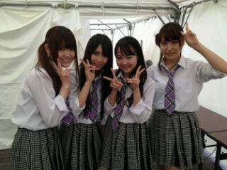

2012/0520Sunらび〜っ(o・・o)
おはりんごっ(o・・o)
さゆりんごっ(o・・o)
おいでシャンプー
全国握手会ｉｎ名古屋
ありがとうございましたー＼(^_^)(^_^)／
めっちゃ日差し強くて
あちちちやったけど
皆さま大丈夫でしたか〜(>_<)？
まっちゅんは太陽に負けそうやった(・∀・;)
暑いの苦手なんよ〜(´；ω；`)
夏乗り越えれるかな〜(´；ω；`)
とか、弱音は捨てて！
今日も皆さんのぱわーを
いただいて
ほんまに楽しい一日になったよ〜(*´ー｀*)
ほんまにありがと〜(*´ー｀*)♪
おいでシャンプーの初の全国握手会ってことで
初心を忘れずべからずってな訳で
髪は右側サイドポニーに
しました( ロ_ロ)ゞ安定！
ほんで初披露のハウス！
見てくださった皆さま
いかがでしたか〜＼(^^)／？
ハウス！可愛い曲やんね〜(*´ー｀*)
これからもっと練習して
完成度あげなければ！
ほんで、乃木坂の詩は
皆さまの振り付けが
ぴったりあっててめっちゃ素敵やった〜！
ありがとうございました♪
そして
松村の自己紹介！
コール&レスポンス的なアレよ！
大成功でしたー(´；ω；`)!!
さゆりん感激！
名古屋の皆さま
ほんまにありがとうございます！
これで御蔵入りしやんでいい！
東京、大阪でも
やらさせて頂きます！
ほんまに恥ずかしいやろに
ごめんな〜(´；ω；`)
さゆりんはこれからも
おもっきり自己紹介やらせて
いただきます！
さゆりんいっきまーすっ(￣ー￣ゞ−☆
ほんでから
握手会！
はじめましてのかた
いつも来てくださる方
名古屋のかた
全国から来てくださったかた
ありがとうございました♪
ちゃんと上手くお話できなかったり
なかなか御名前覚えれなかったりして
反省点がいっぱい(>_<
けど、ほんまに
楽しかったですo(*⌒―⌒*)o
来週も名古屋で
ミニ握手会なんで
よろしくお願いします(*^^*)
そしてせいらりん♪
お誕生日おめでとうー＼(^_^)(^_^)／
誕生日に名古屋で
大好きな握手会できて
よかったね〜(*´ー｀*)
いつも笑顔のせいらりん♪
大好きやで〜っ(o・・o)☆
今日も読んでくださって
ありがとうございました♪
お仕事頑張ります!!
皆さまも１日楽しんでくださいっ♪
ほな、またね〜っ(o・・o)/~

2012/05/20 08:06


コメント(401)
めっちゃ日焼けしたからヒリヒリしてる
自己紹介うまくいってよかったね
1レーンは楽しすぎた
また来週行くね
そお方が盛り上がっていいと思うよ
次からもそれでよろしくーー
握手もめっちゃ楽しかったね！
さゆりん跳ねすぎ(笑)
また次握手できるの楽しみにしてるねー
さゆりんカワユス(*´∀`*)
暑い中、１日お疲れさんでした
さゆりんりんがお蔵入りにならなくてよかったー
びーむもいっぱい発射したのかな？
来月が待ち遠しいです
握手会遠くて行けなくてゴメンね！（泣）
遠くても会いに行ってるファンも沢山いるのに・・！
ヤバい！凹んできた・・！でもさゆりんなら分かってくれるよね！
でも来月の福岡握手会は近いから行くからね！
初めての参加だから緊張するけどよろしく！
なめこ人形付けていくから気付いたら声かけてね！
こうじくんより（笑）
夏は麦茶でミネラル補ってな！
突き進もうや！
握手会お疲れ様(*^_^*)
体調大丈夫？
ゆっくり休んでね下さい♪
くっそ早く東京の全握になんないかなぁ(>_<)
コール&レス成功してよかったね(^o^)
やりたかったなぁ…
１人で大阪でやってしまった(笑)
さゆりんは右側サイドポニーが一番似合うよ！
次いくの大阪だから待ちきれんわ(>_<)
ゴールデンメンバーや…
さゆりん夏生まれなのに暑いの苦手なんだね！
うちも同じく夏生まれだけど暑いの苦手(笑)
コール&レスポンス上手くいってよかったね♪
ハウス生でみたい！！けど、今回は全握いけない^_^;
早く乃木坂46でライブやって欲しいなー♪(^_^)v
おはようさん(。^-^。)
》初心を忘れずべからず
二重否定やがな。
いつまでも初々しく頑張ってね。
暑い中、握手会お疲れ様でした。
レスポンス良かったみたいね。
さゆりん推しはみんな優しいんやな、私も含めて←←
新しい曲とかうまく踊れたかしら。
某ゆったんが盛大に間違えたらしいね。
愛嬌愛嬌。
せいらりんもサプライズお祝いされて、喜んでたみたいやし、万事良かったね。
今日は乃木どこの収録みたいね。
今夜も楽しみに観さしてもらうわ。
(。・_・。) ジーッ…
.
けど東京の握手会には行くよ～( 〃▽〃)♪
僕も今日は仕事です…
お互い頑張ろうね!!
あの自己紹介がないとはじまらないよ(^-^)/
握手会楽しみ
お疲れやまです!!
昨日暑かったね（；´д｀）
自分は顔が若干焼けたー
さゆりんの自己紹介成功してよかったね・∀・
自分後ろの方にいたけどちゃんと叫んだかんねｗ
ハウスのダンス初めて見たけど可愛かったよ´∀｀
ハウス好きだわ!!
さゆりんと握手できて楽しかったです・ω・〃
あんま行けなくてごめんね´・ω・｀
でも来週の握手会も行くんで一緒に楽しもうね(。・∀・。)
それでは…((ヾ。・ω・)／
レス＆コール成功おめでとう＼(^O^)／
これで７月幕張でもできるんだね(^^)
思い切りいかせていただきます(^^)v
じゃあお仕事頑張ってください(^-^)
キャッチフレーズお蔵入りしなくて良かったね!! あのキャッチフレーズ俺は好きですよ(。・ω・。)
あとさゆりんと握手できてほんまに嬉しかった(*´∀`)♪
プーさん気に入って
もらえましたか？ (笑)
東京の握手会もプーさん
行くんでよろしくな!!
では体調に気をつけて
お仕事がんばってください!! 応援してます!!
コール＆レスポンス、成功して良かったです(≧∇≦)
初心忘れず?じゃなくて、初心忘れるべからずですよね(笑
それでは今日も頑張りんご(｀∇´ゞ
握手会おつかれさまでした！！！！
ハウス！めっちゃよかったです＼(^o^)／
また見たいな―
東京の全握いきますね♪
ではお仕事がんばってください！！
冗談はおいといて、昨日もお世話様でした。
大阪の反省を活かして←昨日は、まあ、暑いのは問題なく。
本来は暑さに強い方なんだけどね(苦笑)
ミニライヴの感想は来週の個別でするね。
いくつか思うとこがあったので。
というわけで、来週もよろしく
名古屋おつかれさま。毎度ながら楽しそうで何よりヽ(´ー｀)ノ
東京は七月だからまだ先だけど、楽しみに待ってます。
そして、びーむもパワーアップしてると、期待してるw
溶けかけなさゆりん丸も可愛いでやんしょな～(゜▽゜)(T_T)どーみても17才前後にしか
みえにゃーでやんすし！(＾＾)！。そーきゃあ、カップリングな曲も披露宴すれんで
やんすね～( ^^)Y☆Y(^^ )o(^-^)oなんだかネネコロもテンパって面白かったらしいで
やんすね～。さゆりんは案外度胸あるイメージですきに～～。
画のさゆりん丸も可愛いでやんすね～。こうしてみるとプロフィールに納得するですたい
( ^^)Y☆Y(^^ )(^_-)-☆
次は名古屋個握☆帰り路に驚きの出来事もあって話したいこといっぱいあるから上手く伝えられるようにイメトレしなきゃ(笑)それじゃ、楽しみにしています。
さゆりんごびーむが可愛すぎてその後何も言えなかった(〃∇〃)
ハウスのダンスも可愛かったからまた見たいな♪
来週の個別も行くから待っててねー
暑くて日焼けもしちゃったけど超楽しかった！
さゆりんごビーム最強や\(//∇//)\
さゆりんめっちゃ美人でびびったよ&ezF650;
あと、さゆりんごぱんちしてくれてありがとう&ezF37E;
やられてしまったよ(笑)
また来週の個別も行くから、まっててね&ezF649;
名古屋での全国握手会お疲れさまでしたー！！
暑さで体調、崩したりしてないですか＞＜？
ハウス！見れてないので関東での全握で確認せねばっ！！
ウェーブとかの振りがあるんですよね！！
自己紹介、大成功おめでとうございます！！
こちらも全握の時に確認！！
お仕事、ふぁいとですー！！
また来月行くからー♪( ´▽｀)
お疲れさま！！
☆☆☆☆☆プーさん☆☆☆☆☆
幕張で待ってるよ
テレビでの自己紹介では、テレビに向かってやって練習してます。
自己紹介、成功したんだね！
まぁ、さゆりん（o‥o）推しにかかれば、朝飯前でしょｗ(￣ー￣)ﾆﾔﾘ
８/２６日に何かイベントがあれば、フライングでサプライズがあるかもよ？
でも、あんまりソワソワしてちゃいかんよ～ 無かったら落ち込むから…ｏｒｚ
２７日のイベント、当たらないかなぁ～
勿論さゆりん（o‥o）は、来てくれるよね？
あーほんと行けなかったのが悔しい(´д｀)
土曜日まで仕事頑張れないはーｗｗｗ
握手会はすごい天気に恵まれたみたいだね！
けど周りからさゆりんが、ちょっと熱中症ぽくなってたよって
聞いたから心配したはー(ﾉД`)
大丈夫ー？
無理せんといてねー(´･ω･`)
あーはやくさゆりんに会いたいー(泣)
おいシャンの個人ＰＶ見ながら
さゆりん補充しとく！！ｗ
これから暑くなるけど頑張ってねー！
したっけ、じゃーにー( ^o^)ﾉｼ
昨日は暑い中お疲れさまー
今日は札幌すごいいい天気でどっか遊びに行きたいー
けど課題やらなきゃ（泣）
北海道でも全握やってくれるのを楽しみにしてまーす(^o^)
今日もお仕事がんばってね(´∀`)
ノシ
コメント8回目？
( ´艸｀)
こんにちりんご
あつかったね～
溶けそうだった(笑)
今日の乃木どこみるよー
私は何とか日焼け大丈夫だったけど、ちょっと黒くなっちゃったよー(:_;)
さゆりんごは大丈夫だった？
ハウス!初披露だったね☆
可愛かったよー(ノ＞＜)ノ
そして握手会!!
初めましてだったけど
すっごいぴょんぴょん飛び跳ねて話してくれて、嬉しかったよ(^O^)
…あの変なさゆりんごビームをやったのは、私です(:_;)
変なビームやってごめんちゃい＼(^^:;)
さゆりんごビームめっちゃ可愛かったー♪♪
私のと全然違った(T_T)
楽しい一日になったよ☆
ありがとう♪♪
3rdも行くねっ(o・・o)
これで東京でもコール＆レスポンスできるね!!
乃木オタの優しさに感動(T_T)
ってなわけで暑い中お疲れさま^^
ハウスが見たくて見たくて家で病んでましたorz
ほんと昨日行けなかった自分が憎い(>__<)
覚えられてなかったらなかったでいろいろ言われるんだろうけど
気にしちゃあかんよ?！(｀・ω・´)
では明日からも元気に行きましょう(o・・o)
自己紹介成功おめでとう(*^▽^)/★*☆♪
かず～きさんのいたたぎますも増えてよかったね!!
あと昨日はあんまり回れなくて本当にごめんなさい・゜・(つД｀)・゜・
来週もよろしく!
さゆりんメッチャ可愛いかった
これでまた明日から頑張れます
さゆりんも体調に気おつけて頑張ってね
さゆりん推し
さゆりん感激！
名古屋の皆さま
ほんまにありがとうございます！
これで御蔵入りしやんでいい！
東京、大阪でも
やらさせて頂きます！
ほんまに恥ずかしいやろに
ごめんな〜(´；ω；`)
さゆりんはこれからも
おもっきり自己紹介やらせて
いただきます！
↑
昨日は仕事で行けなくて、一緒にやること出来んかった…
だけど御蔵入りにならなかったから良かったよ～
今度行ったときにもやってね！
(って、パシフィコでやったけどね)
首からうまい(棒)を提げたＴＡＫＥ＠１９７３
昨日はお疲れ様(*^^*)
自己紹介のコール成功したんや♪
良かったねー(^o^)v
お蔵入りになったら泣いてました←
東京全握でもやってねρ( ^ｏ^)b_♪♪
かーくんミニ握行けないから…。
さゆりん名前覚えるの早いと思うよー
かーくんのこと忘れるな(笑
お仕事頑張ってくださいヽ(・∀・)ノ
体調は崩さずにね
かーくん(*゜ー゜)ゞ⌒☆
おつかれさまです
昨日の全握は天気よくてよかったね
良すぎて困るくらいだったかな？
名古屋は行けなかったけど
東京全握は絶対行くよ～
ハウス！のパフォーマンスとかめちゃ楽しみ
いじょ～
さゆアポ-っ！
↑使ってみた(笑)
コール&レスポンス♪
大成功？やったね♪
お蔵入りどころか、安定!!でしょ!!
ライブも握手会もらりん
ハピバも大成功だった
みたいで良かった^^
・・・・・
『さゆりんりんっ！』
・・・・・
『さゆりんごっ！』
今日も東京に向けて練習
してますけど、何か？(笑)
さゆりんだいすき
＼(^o^)／
ほな またね！
さゆりんいっきまーすっｗ
かわゆゆゆゆす//
さゆりんごの右サイドポニー
めっちゃ好き
うん、安定感 にぱ
握手会行きたかったわず、
さゆりんりん言いたかったわずｗ
東京の握手会行きます てれ
夏休みやけ、行けるよおおん
めっちゃ嬉しい(*^^*)
最近更新早いからほんとに嬉しいな(*´∇｀*)
握手会お疲れ様(*^^*)
俺もさゆりんと握手したかったよ(ToT)
東京全握まで我慢しよ(T^T)
せいらりん誕生日おめでとうございます♪♪
ってか俺もさゆりん！！！！って叫びたかったよ( ´△｀)
今日の乃木坂ってどこ？楽しみにしてるね！
今日も体調に気をつけて１日頑張ってね(*^^*)
またね＼(^o^)／
6月の東京個別には行くからその時みせてなぁ～。
昨日はありがとうございます！すごく楽しかった！日に焼けたよ！
まっっんは大丈夫？
来週さゆりんごとたくさん話せるから楽しみ！
早く来週にならないかな？
今日もお仕事頑張ってね
松村さん、こんにちは(^_^)/
ォィラは、『初 乃木坂４６・現場』だったので
すべてが「新鮮」で、無茶苦茶楽しかったよ！！
ただねぇ～～、あの陽射しには・・・ 少々閉口気味だったなぁ～～
足も、痛いよ(T_T)
ライブパフォーマンスも、想像していたのより良かったョ！！(*^^)v
ライブってさぁ、まぁ「完成度」とかも絶対【重要】だけれど・・・ とりあえず今は、『一生懸命』にやること集中すれば、
オーディエンスにも、必ず伝わると思うし
努力している姿は、昨日もなんとなく感じられたョ！！
【コール&レスポンス的なアレ】も、続けてネ(*^^)v
あ・く・しゅ～～～！！！
『さゆりんご パンチ』いただきました！！（*^_^*）
破壊力は、無くても・・・
まぁそういうこっちゃっ（笑）（＾－＾）。。。
では、また今週？名古屋でお会い出来るの
そして、大阪 でも！！！！！
はたまた、、、、北海道＆博多も予定には入っているんで
よっぽど、体調とかに異変でもない限り「乃木坂４６・現場」には、すべて行くつもりっす。。。
近々では、土曜日お会い出来るのメッチャ楽しみにしているよ(^_^)/
さゆりんのとこには１回しか行ってないけど,次は個別で会いに行くからって言ったからね!(o^∀^o)
こんにちりんご、さゆりんごーーーーーーーーー!!!!!!!
昨日はほんまにほんまにほんまにほんまに楽しかったよ
わかるかな？「さきのこ」やでーーーーーーーーー!!!!!
ライブから握手会まですっごい盛りあがった!!!
おいシャンはもちろん、ハウス!すっごい良かった!!!
「すき」の掛け合い全力でやったよ
さゆりん!!コール全力で燃え尽きるぐらい大きい声で言ったよ＾＾さゆりんりん!!さゆりんご!!!って＾＾
さゆりんのためだったらそんなの恥ずかしいわけないやんか
さゆりんがバックステージに戻るとき「さゆりーーーーーん」って
叫んでたけど聞こえたかな？ｗ
超叫んだよ!!!w
握手会もすっごい楽しかった!!
さゆりんごビームもすっぽんも超良かったよ＾＾
気づいたらもってた握手券さゆりんのレーンに全部
使ってた
さゆりんとむっちゃお話できて幸せ!!!
「さきのこ」って言ったらわかるよ!って言ってくれて
すっごい嬉しかったよ＾＾
サードの名古屋全握まで会えんけど＞＜・・・・・
絶対次も行くから待ってて
さゆりん・メンバー・ふぁんの方と一緒に一日過ごせて
すごいすごいすごい幸せだったよ
さゆりんのことほんまめっちゃ好きやから!!!!!
覚えててな、うちの推しは「さゆりん」やから!!!!!
さゆりん大好きすぎ!!!
コメントする